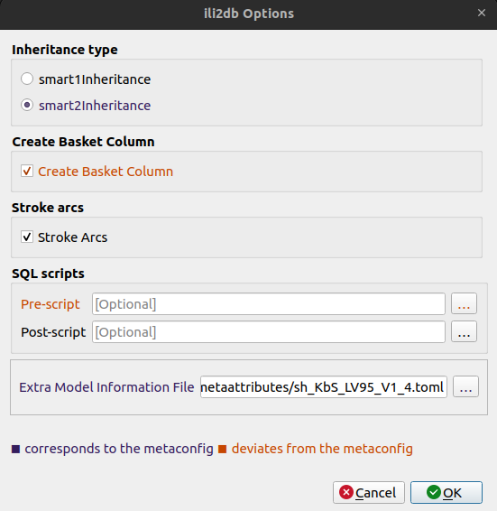
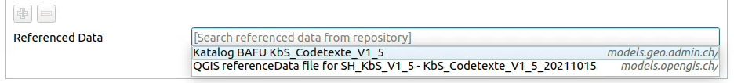
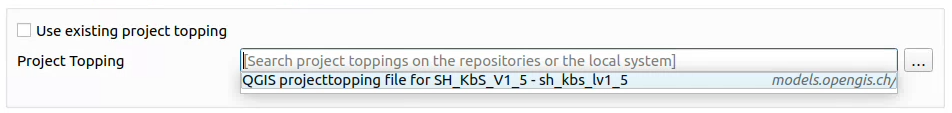
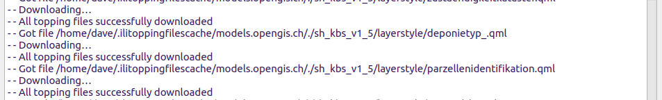

Toppings
Worum es geht?
Mit Model Baker können Zusatzinformationen zu Modellen automatisch über das Web gefunden werden.
Zusatzinformationen wie:
- ili2db-Einstellungen (Metakonfiguration)
- Datenfiles wie Kataloge (Referenzierte Daten)
- QGIS-Projektkonfigurationen (sogenannte Toppings)
Das bedeutet, dass komplexe Konfigurationen einmal vorgenommen und mehrfach verwendet werden können.
Metakonfiguration
Die Metakonfiguration ist vor dem Erstellen des physischen Datenmodells auf der Seite Schema Import Konfiguration zu finden.

Die Metakonfiguration kann sowohl die ili2db-Einstellungen als auch Links zu den erforderlichen QGIS-Projektkonfigurationen (Toppings) und Datenfiles (referenzierte Daten) enthalten.
Änderungen werden in der Eingabemaske für ili2db Options visuell gekennzeichnet:

Technische Hintergründe und detaillierte Informationen zur Metakonfiguration findest du hier.
Referenzierte Daten
Die für ein Modell erforderlichen referenzierten Daten, wie Kataloge und Codelisten, findest du auf der Seite Datenimport-Konfiguration.

Sie können auch bereits zuvor über die Metakonfiguration verknüpft worden sein.
Technische Hintergründe und detaillierte Informationen zur Integration referenzierter Daten findest du hier.
Toppings
Die QGIS-Projektkonfigurationen oder sogenannten "Toppings" können – sofern sie nicht bereits über die Metakonfiguration verknüpft sind – jedes Mal auf der Seite Projektgenerierung über eine "ProjektTopping"-Datei gefunden werden.

Das Projekttopping definiert allgemeine Projektkonfigurationen wie Layertree, Variablen usw. und verlinkt auf die benötigten Toppings wie Layerstyle usw. welche dann beim Generieren des Projekts heruntergeladen und angewendet werden.

Technische Hintergründe und detaillierte Informationen zu den Toppings findest du hier.
Woher kommen diese zusätzlichen Informationen?
So wie wir jetzt INTERLIS-Modelle finden können, indem wir die ilimodels.xml-Dateien in den Repositories durchsuchen, können wir diese zusätzlichen Informationen über die Datei ilidata.xml finden.
Es filtert die Einträge nach dem Namen des verwendeten INTERLIS-Modells.
Weitere Informationen zum technischen Hintergrund findest du hier
Was sind die Workflows?
Alle diese Zusatzinformationen beziehen sich auf ein bestimmtes Modell. Sie werden daher nach dem Namen des ausgewählten Modells gesucht.

Zur Auswahl einer Metakonfiguration
...die auf referenzierte Daten und ein Projekttopping verweist, sieht der Workflow folgendermassen aus:
- Benutzer:in gibt den Modellnamen in die Source Selektion ein.
- ilidata.xml wird nach Links zu Metakonfigurationsdateien entsprechend dem Modellnamen durchsucht
-
Benutzer:in wählt eine Metakonfiguration auf der Seite Schema-Import-Konfiguration aus.
-
Die Metakonfigurationsdatei wird heruntergeladen und die ili2db-Einstellungen werden aus der Metakonfiguration ausgelesen.
- Die ili2db-Einstellungen werden bei der Erstellung des physischen Modells berücksichtigt.
- Links zu den referenzierten Daten werden aus der Metakonfiguration gelesen.
- ilidata.xml wird nach Links zu den referenzierten Daten geparst.
- Referenzierte Datenfiles werden heruntergeladen und importiert.
- Der Link zum Projekttopping wird aus der Metakonfiguration gelesen.
- ilidata.xml wird nach Links zum Projekttopping geparst.
- Die Projekttopping-Datei wird heruntergeladen und Links zu den anderen Toppings (wie Layerstyles usw.) werden aus dem Projekttopping ausgelesen.
- ilidata.xml wird nach Links zu den Toppings geparst.
- Toppings-Dateien werden heruntergeladen.
- Die Informationen werden aus dem Projekttopping und den verknüpften Toppings gelesen und in die Generierung des QGIS-Projekts einbezogen.
Bei direkter Auswahl referenzierter Daten
...aus den Repositories auf der Seite Datenimport-Konfiguration sind die Schritte:
- ilidata.xml wird nach Links zu den referenzierten Daten entsprechend dem Modellnamen geparst.
-
Benutzer:in wählt referenzierte Daten aus.
-
Referenzierte Datenfiles werden heruntergeladen und importiert.
Note
Die Links zu den referenzierten Daten werden entsprechend dem verwendeten Modellnamen gefunden.
Bei direkter Auswahl des Projekttoppings
... aus den Repositories in der Projektgenerierung sind die Schritte:
- ilidata.xml wird nach Links zu den Projekttoppings entsprechend dem Modellnamen geparst.
-
Benutzer:in wählt ein Projekttopping aus.
-
Die Projekttopping-Datei wird heruntergeladen und Links zu den anderen Toppings (wie Layerstyles usw.) werden aus dem Projekttopping ausgelesen.
- ilidata.xml wird nach Links zu den Toppings geparst.
- Toppings-Dateien werden heruntergeladen.
- Die Informationen werden aus dem Projekttopping und den verknüpften Toppings gelesen und in die Generierung des QGIS-Projekts einbezogen.
Note
Ein Projekttopping kann auch aus dem lokalen System ausgewählt werden.
Wie erstelle ich meine eigenen Toppings?
Dies kann ganz einfach mit dem Model Baker Topping Exporter aus einem bestehenden QGIS-Projekt erstellt werden.
Verwendung eines lokalen Repositories
Es kann für Testzwecke nützlich sein, ein lokales Repository verwenden zu können. Dies wird als benutzerdefiniertes Modell-Verzeichnis konfiguriert. ilidata.xml und ilimodels.xml werden darin gesucht und geparst.
Technisches Konzept
Das Konzept der Toppings ist nicht nur an den Model Baker gebunden. Hier wird beschrieben, wie die grundlegende Funktionalität bei der repositoryübergreifenden Suche nach Zusatzinformationen funktioniert.